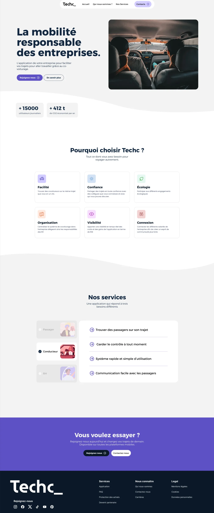
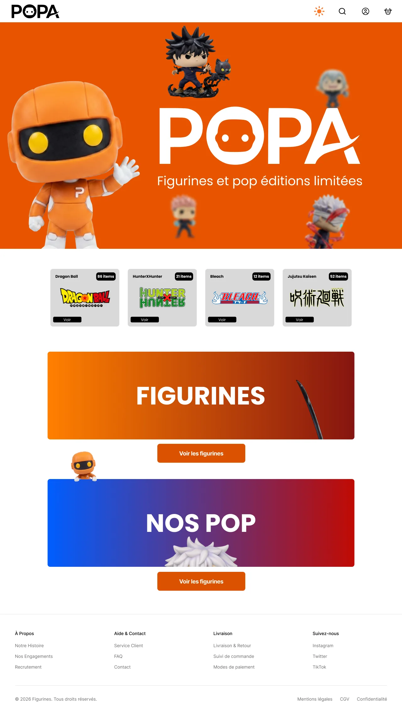

Projets sélectionnés
Mes Travaux
04

01Temu
Temu
Audit et refonte du parcours d'achat de Temu pour un e-commerce plus accessible, éthique et éco-conçu : EcoIndex, accessibilité, dark patterns, puis prototype Figma.
Voir le projet

02TechCorp
TechCorp
Application de covoiturage entre collègues en marque blanche, conçue en une semaine de sprints Scrum : backlog, parcours passager, conducteur et RH, landing page.
Voir le projet

03Popa
Popa
Plateforme e-commerce dédiée aux figurines de collection. De la recherche utilisateur à la conception d'une expérience d'achat intuitive : UX research, UI design et prototype haute fidélité.
Voir le projet
04Fliq
Fliq
Application de rencontre nouvelle génération : 21 écrans haute fidélité couvrant l'onboarding, la découverte, le matching et la messagerie. Un système de design complet pensé pour iOS.
Voir le projet